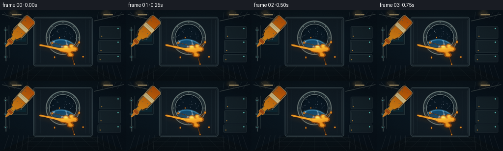
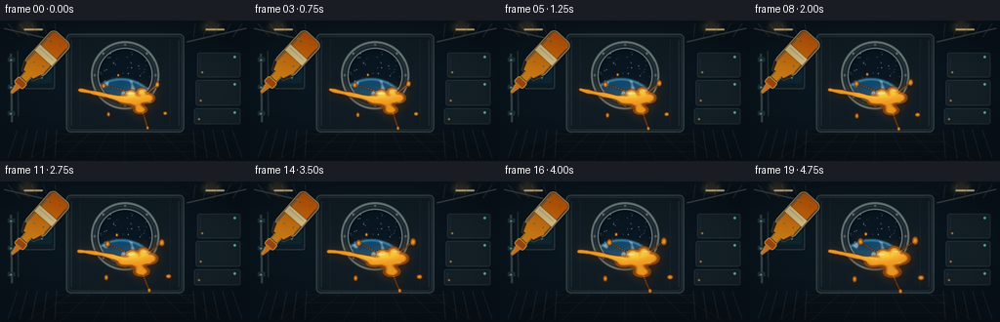
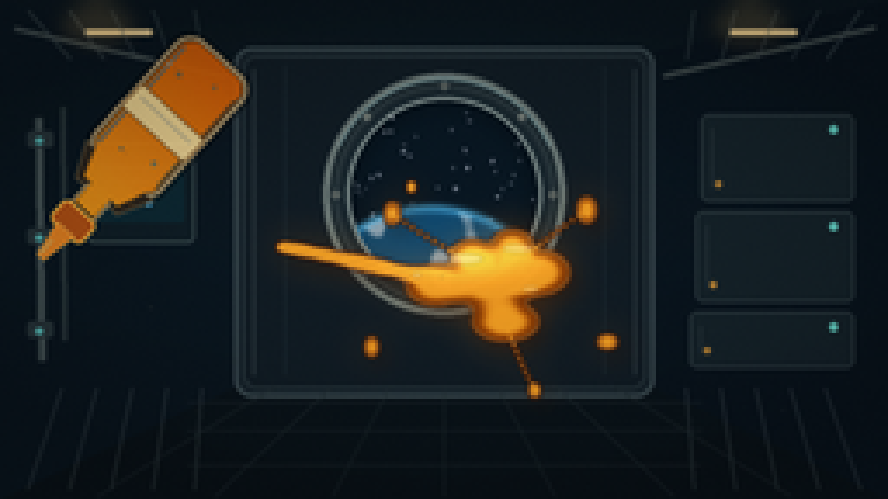
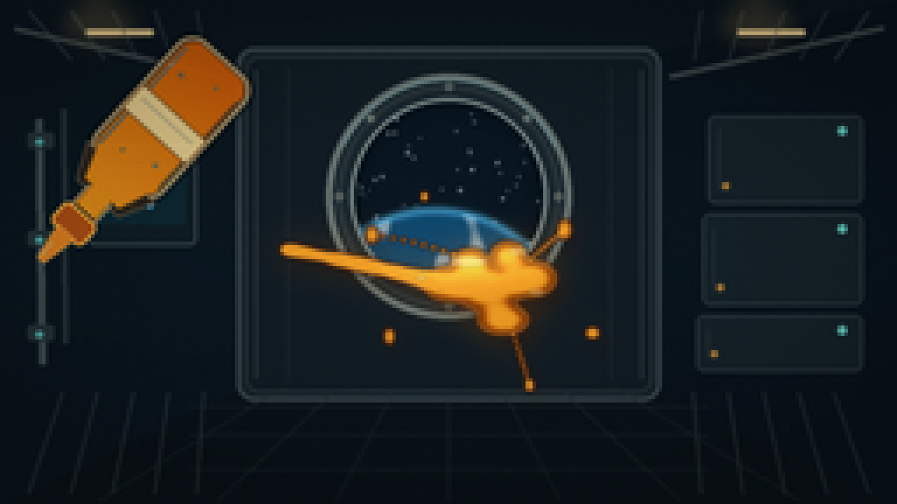

CODING AGENTS AS PIXEL WORLD MODELS
traex/DeepSeek-V4.1-Flash · phygen_004
点击播放 · 原生 RGB 像素
逐轮保存的候选
回放视频、检查图与代码变化。
每份候选均可单独播放。实际图片检查记录在下方工具轨迹中。
候选 01播放与检查图
点击播放 · 原生 RGB 像素


展开代码变化
--- 上一保存版本
+++ 本次保存版本
@@ -0,0 +1,583 @@
+from __future__ import annotations
+
+import json
+import math
+import random
+from pathlib import Path
+
+import numpy as np
+from PIL import Image, ImageChops, ImageDraw, ImageFilter
+
+import artifact_io
+
+
+CASE_DIR = Path(__file__).resolve().parent
+SPEC = json.loads((CASE_DIR / "task_spec.json").read_text())
+W = int(SPEC["width"])
+H = int(SPEC["height"])
+N = int(SPEC["frames"])
+FPS = float(SPEC["fps"])
+SS = 4
+
+
+def s(value: float) -> int:
+ return int(round(value * SS))
+
+
+def box(x0: float, y0: float, x1: float, y1: float) -> tuple[int, int, int, int]:
+ return s(x0), s(y0), s(x1), s(y1)
+
+
+def mix(a: tuple[float, float, float], b: tuple[float, float, float], amount: float):
+ return tuple(a[i] + (b[i] - a[i]) * amount for i in range(3))
+
+
+def smoothstep(edge0: float, edge1: float, value: np.ndarray) -> np.ndarray:
+ scaled = np.clip((value - edge0) / (edge1 - edge0), 0.0, 1.0)
+ return scaled * scaled * (3.0 - 2.0 * scaled)
+
+
+def make_background(t: float) -> Image.Image:
+ width, height = W * SS, H * SS
+ yy, xx = np.mgrid[0:height, 0:width].astype(np.float32)
+ xn = xx / max(1, width - 1)
+ yn = yy / max(1, height - 1)
+
+ top = np.array([5.0, 12.0, 20.0], dtype=np.float32)
+ middle = np.array([17.0, 31.0, 42.0], dtype=np.float32)
+ low = np.array([7.0, 15.0, 23.0], dtype=np.float32)
+ vertical = np.clip(yn * 1.35, 0.0, 1.0)[..., None]
+ base = top + (middle - top) * np.clip(vertical * 1.7, 0.0, 1.0)
+ base = base * (1.0 - np.clip((vertical - 0.62) / 0.38, 0.0, 1.0)) + low * np.clip(
+ (vertical - 0.62) / 0.38, 0.0, 1.0
+ )
+
+ window_glow = np.exp(-(((xn - 0.5) / 0.28) ** 2 + ((yn - 0.40) / 0.29) ** 2))
+ warm_glow = np.exp(-(((xn - 0.16) / 0.27) ** 2 + ((yn - 0.19) / 0.20) ** 2))
+ base += window_glow[..., None] * np.array([5.0, 13.0, 20.0], dtype=np.float32)
+ base += warm_glow[..., None] * np.array([8.0, 5.0, 2.0], dtype=np.float32)
+
+ vignette = 1.0 - 0.34 * np.clip(
+ ((xn - 0.5) ** 2 / 0.34 + (yn - 0.5) ** 2 / 0.25), 0.0, 1.0
+ )
+ base *= vignette[..., None]
+ image = Image.fromarray(np.clip(base, 0, 255).astype(np.uint8), "RGB")
+ draw = ImageDraw.Draw(image, "RGBA")
+
+ # Corridor shell: dark side walls converge on the station bulkhead.
+ draw.polygon(
+ [s(0), s(0), s(69), s(15), s(69), s(113), s(0), s(144)],
+ fill=(10, 22, 31, 235),
+ )
+ draw.polygon(
+ [s(256), s(0), s(187), s(15), s(187), s(113), s(256), s(144)],
+ fill=(9, 20, 29, 235),
+ )
+ draw.polygon(
+ [s(0), s(0), s(256), s(0), s(187), s(15), s(69), s(15)],
+ fill=(12, 24, 32, 225),
+ )
+ draw.polygon(
+ [s(0), s(144), s(256), s(144), s(187), s(111), s(69), s(111)],
+ fill=(10, 19, 25, 240),
+ )
+
+ # Bulkhead frame and layered panel seams.
+ draw.rounded_rectangle(
+ box(67.5, 13.5, 188.5, 114.5), radius=s(5), fill=(23, 35, 43, 245),
+ outline=(57, 72, 78, 255), width=s(1.2)
+ )
+ draw.rounded_rectangle(
+ box(70, 16, 186, 112), radius=s(4), fill=(17, 28, 36, 255),
+ outline=(39, 53, 59, 255), width=s(0.7)
+ )
+ for x in (73, 183):
+ draw.line((s(x), s(20), s(x), s(108)), fill=(72, 87, 91, 130), width=s(0.7))
+ draw.line((s(82), s(19), s(82), s(108)), fill=(36, 52, 60, 150), width=s(0.5))
+ draw.line((s(174), s(19), s(174), s(108)), fill=(36, 52, 60, 150), width=s(0.5))
+
+ # Ceiling rails and warm work lights.
+ draw.line((s(4), s(8), s(65), s(22)), fill=(72, 83, 83, 210), width=s(1.5))
+ draw.line((s(252), s(8), s(191), s(22)), fill=(72, 83, 83, 210), width=s(1.5))
+ for x, y, length in ((24, 8, 20), (210, 8, 20)):
+ draw.rounded_rectangle(
+ box(x, y, x + length, y + 2.2), radius=s(1.1),
+ fill=(255, 225, 162, 235), outline=(93, 88, 70, 255), width=s(0.45)
+ )
+
+ # Side-wall ribs.
+ for x in (8, 20, 32, 44, 56):
+ top_x = x + 0.20 * (69 - x)
+ bottom_x = x + 0.16 * (69 - x)
+ draw.line((s(x), s(3), s(top_x), s(17)), fill=(64, 78, 82, 130), width=s(0.8))
+ draw.line((s(x), s(141), s(bottom_x), s(112)), fill=(56, 69, 73, 140), width=s(0.8))
+ for x in (200, 212, 224, 236, 248):
+ top_x = 187 + (x - 187) * 0.84
+ bottom_x = 187 + (x - 187) * 0.83
+ draw.line((s(x), s(3), s(top_x), s(17)), fill=(64, 78, 82, 130), width=s(0.8))
+ draw.line((s(x), s(141), s(bottom_x), s(112)), fill=(56, 69, 73, 140), width=s(0.8))
+
+ # Utility lockers on the right wall.
+ for i, (y0, y1) in enumerate(((33, 58), (61, 87), (90, 106))):
+ x0 = 202 - i * 1.6
+ draw.rounded_rectangle(
+ box(x0, y0, 246, y1), radius=s(2), fill=(22, 35, 42, 230),
+ outline=(62, 76, 80, 220), width=s(0.6)
+ )
+ draw.line((s(x0 + 3), s(y0 + 4), s(x0 + 3), s(y1 - 4)), fill=(85, 98, 99, 85), width=s(0.45))
+ draw.ellipse(box(239, y0 + 3, 241.5, y0 + 5.5), fill=(105, 218, 204, 220))
+ draw.ellipse(box(x0 + 4, y1 - 6, x0 + 6, y1 - 4), fill=(219, 153, 58, 200))
+
+ # Pipes and small instrument housings on the left.
+ draw.line((s(11), s(34), s(12), s(104)), fill=(61, 75, 78, 230), width=s(2.2))
+ draw.line((s(11.2), s(34), s(12.2), s(104)), fill=(116, 127, 125, 95), width=s(0.55))
+ draw.line((s(18), s(31), s(18.5), s(98)), fill=(40, 53, 57, 235), width=s(1.4))
+ for y in (40, 68, 95):
+ draw.rounded_rectangle(box(7.8, y - 2.2, 15.2, y + 2.2), radius=s(1), fill=(38, 51, 56, 255))
+ draw.ellipse(box(10.1, y - 0.6, 12.2, y + 1.5), fill=(84, 181, 177, 225))
+ draw.rounded_rectangle(
+ box(25, 41, 56, 70), radius=s(2), fill=(15, 29, 37, 245),
+ outline=(67, 83, 86, 220), width=s(0.7)
+ )
+ draw.rounded_rectangle(box(28, 44, 53, 64), radius=s(1), fill=(13, 39, 49, 255))
+ draw.line((s(30), s(48), s(50), s(48)), fill=(59, 156, 157, 150), width=s(0.5))
+ draw.line((s(30), s(52), s(45), s(52)), fill=(59, 156, 157, 100), width=s(0.4))
+ for x, y, color in ((32, 58, (96, 222, 202)), (37, 58, (226, 162, 67)), (42, 58, (84, 167, 209))):
+ draw.ellipse(box(x, y, x + 1.6, y + 1.6), fill=color + (230,))
+
+ # Floor grates and perspective seams.
+ for x in (28, 62, 96, 128, 160, 194, 228):
+ target_x = 128 + (x - 128) * 0.48
+ draw.line((s(x), s(143), s(target_x), s(111)), fill=(34, 45, 50, 165), width=s(0.55))
+ for y in (116, 124, 134):
+ draw.line((s(54), s(y), s(202), s(y)), fill=(33, 43, 48, 150), width=s(0.5))
+
+ # Window cavity.
+ cx, cy, outer_r, inner_r = 128.0, 56.0, 35.0, 28.0
+ draw.ellipse(box(cx - outer_r, cy - outer_r, cx + outer_r, cy + outer_r), fill=(26, 37, 43, 255))
+ draw.ellipse(
+ box(cx - outer_r, cy - outer_r, cx + outer_r, cy + outer_r),
+ outline=(105, 118, 116, 255), width=s(2.1)
+ )
+ draw.ellipse(
+ box(cx - outer_r + 3.2, cy - outer_r + 3.2, cx + outer_r - 3.2, cy + outer_r - 3.2),
+ outline=(42, 54, 59, 255), width=s(1.2)
+ )
+ draw.ellipse(
+ box(cx - inner_r, cy - inner_r, cx + inner_r, cy + inner_r),
+ fill=(2, 8, 15, 255), outline=(141, 152, 147, 255), width=s(1.0)
+ )
+ for angle in range(0, 360, 45):
+ rad = math.radians(angle)
+ bx = cx + math.cos(rad) * 31.3
+ by = cy + math.sin(rad) * 31.3
+ draw.ellipse(box(bx - 1.0, by - 1.0, bx + 1.0, by + 1.0), fill=(145, 151, 142, 255))
+ draw.ellipse(box(bx - 0.45, by - 0.45, bx + 0.45, by + 0.45), fill=(54, 61, 60, 255))
+
+ # Window stars and a sunlit Earth limb, all clipped to the circular glass.
+ layer = Image.new("RGBA", (width, height), (0, 0, 0, 0))
+ ldraw = ImageDraw.Draw(layer, "RGBA")
+ rng = random.Random(481)
+ for _ in range(65):
+ angle = rng.random() * math.tau
+ radius = math.sqrt(rng.random()) * 27.2
+ px = cx + math.cos(angle) * radius
+ py = cy + math.sin(angle) * radius
+ brightness = rng.randint(95, 245)
+ size = rng.choice((0.22, 0.28, 0.34, 0.46))
+ ldraw.ellipse(
+ box(px - size, py - size, px + size, py + size),
+ fill=(brightness, brightness, min(255, brightness + 10), rng.randint(120, 245)),
+ )
+
+ earth_cx, earth_cy, earth_r = 124.0, 99.0, 39.0
+ local_y, local_x = np.mgrid[0:height, 0:width].astype(np.float32)
+ lx = local_x / SS
+ ly = local_y / SS
+ earth_d = np.sqrt((lx - earth_cx) ** 2 + (ly - earth_cy) ** 2)
+ earth_mask = earth_d <= earth_r
+ shade = np.clip((ly - 76.0) / 62.0, 0.0, 1.0)
+ ocean = np.zeros((height, width, 4), dtype=np.uint8)
+ ocean[..., 0] = (7 + 16 * shade).astype(np.uint8)
+ ocean[..., 1] = (61 + 54 * shade).astype(np.uint8)
+ ocean[..., 2] = (99 + 57 * shade).astype(np.uint8)
+ ocean[..., 3] = np.where(earth_mask, 255, 0).astype(np.uint8)
+ earth_image = Image.fromarray(ocean, "RGBA")
+
+ cloud_field = (
+ np.sin(lx * 0.23 + ly * 0.04)
+ + 0.72 * np.sin(lx * 0.48 - ly * 0.13 + 1.4)
+ + 0.45 * np.sin(lx * 0.11 + ly * 0.32 + 0.8)
+ )
+ cloud_alpha = smoothstep(0.70, 1.28, cloud_field) * earth_mask * 155.0
+ clouds = np.zeros((height, width, 4), dtype=np.uint8)
+ clouds[..., :3] = 230
+ clouds[..., 3] = cloud_alpha.astype(np.uint8)
+ earth_image = Image.alpha_composite(earth_image, Image.fromarray(clouds, "RGBA"))
+ layer = Image.alpha_composite(layer, earth_image)
+
+ atmosphere = np.zeros((height, width, 4), dtype=np.uint8)
+ atmo_band = np.exp(-((earth_d - earth_r) / 1.3) ** 2)
+ atmosphere[..., 0] = 78
+ atmosphere[..., 1] = 183
+ atmosphere[..., 2] = 235
+ atmosphere[..., 3] = (atmo_band * 155.0).astype(np.uint8)
+ layer = Image.alpha_composite(layer, Image.fromarray(atmosphere, "RGBA"))
+
+ window_mask = Image.new("L", (width, height), 0)
+ ImageDraw.Draw(window_mask).ellipse(
+ box(cx - inner_r + 1.0, cy - inner_r + 1.0, cx + inner_r - 1.0, cy + inner_r - 1.0),
+ fill=255,
+ )
+ layer.putalpha(ImageChops.multiply(layer.getchannel("A"), window_mask))
+ image = Image.alpha_composite(image.convert("RGBA"), layer).convert("RGB")
+ draw = ImageDraw.Draw(image, "RGBA")
+
+ # Window bloom and reflected cool light on the bulkhead.
+ bloom = Image.new("RGBA", (width, height), (0, 0, 0, 0))
+ bdraw = ImageDraw.Draw(bloom, "RGBA")
+ bdraw.ellipse(
+ box(cx - 31, cy - 31, cx + 31, cy + 31),
+ fill=(70, 159, 204, 26),
+ )
+ bloom = bloom.filter(ImageFilter.GaussianBlur(s(5.0)))
+ image = Image.alpha_composite(image.convert("RGBA"), bloom).convert("RGB")
+ draw = ImageDraw.Draw(image, "RGBA")
+ draw.arc(
+ box(cx - 33.5, cy - 33.5, cx + 33.5, cy + 33.5),
+ 205, 335, fill=(164, 217, 228, 95), width=s(0.65)
+ )
+
+ # Small ceiling bloom.
+ lights = Image.new("RGBA", (width, height), (0, 0, 0, 0))
+ ldraw = ImageDraw.Draw(lights, "RGBA")
+ for lx0, ly0 in ((28, 7), (216, 7)):
+ ldraw.ellipse(box(lx0 - 12, ly0 - 7, lx0 + 12, ly0 + 7), fill=(255, 197, 104, 42))
+ lights = lights.filter(ImageFilter.GaussianBlur(s(3.0)))
+ image = Image.alpha_composite(image.convert("RGBA"), lights).convert("RGB")
+ return image
+
+
+def bottle_geometry(t: float):
+ theta = math.radians(42.0 + 0.9 * math.sin(math.tau * t + 0.4))
+ cx = 48.0 + 0.35 * math.sin(math.tau * t)
+ cy = 34.0 + 0.25 * math.cos(math.tau * t + 0.2)
+ tip = (cx + math.sin(theta) * 50.0, cy + math.cos(theta) * 50.0)
+ return cx, cy, theta, tip
+
+
+def make_bottle_layer(t: float) -> Image.Image:
+ cx, cy, theta, _ = bottle_geometry(t)
+ side = 140
+ layer = Image.new("RGBA", (s(side), s(side)), (0, 0, 0, 0))
+ draw = ImageDraw.Draw(layer, "RGBA")
+ center = 70.0
+
+ body = box(center - 13, center - 24, center + 13, center + 22)
+ shoulder = [
+ (s(center - 13), s(center + 20)), (s(center - 8), s(center + 30)),
+ (s(center + 8), s(center + 30)), (s(center + 13), s(center + 20)),
+ ]
+ neck = box(center - 4.5, center + 29, center + 4.5, center + 37)
+ cap = box(center - 6, center + 36, center + 6, center + 44)
+ nozzle = [
+ (s(center - 3.2), s(center + 43)), (s(center + 3.2), s(center + 43)),
+ (s(center + 2.1), s(center + 50)), (s(center + 1.25), s(center + 54)),
+ (s(center - 1.25), s(center + 54)), (s(center - 2.1), s(center + 50)),
+ ]
+
+ # Soft body shadow and smoky transparent casing.
+ draw.rounded_rectangle(
+ (body[0] - s(1.2), body[1] - s(1.0), body[2] + s(1.2), body[3] + s(1.2)),
+ radius=s(7), fill=(4, 8, 10, 110)
+ )
+ draw.rounded_rectangle(body, radius=s(6), fill=(35, 29, 22, 225), outline=(162, 140, 101, 255), width=s(1.2))
+ draw.polygon(shoulder, fill=(45, 35, 25, 230), outline=(169, 144, 98, 245))
+ draw.rectangle(neck, fill=(44, 35, 27, 240), outline=(177, 150, 101, 255), width=s(0.8))
+ draw.rounded_rectangle(cap, radius=s(2), fill=(169, 77, 20, 255), outline=(255, 184, 66, 255), width=s(0.75))
+ draw.polygon(nozzle, fill=(219, 125, 33, 255), outline=(255, 199, 88, 235))
+ draw.line(
+ (s(center - 1.0), s(center + 48), s(center - 0.65), s(center + 53)),
+ fill=(255, 224, 128, 190), width=s(0.45)
+ )
+
+ # Honey held inside the transparent squeeze bottle.
+ honey_mask = Image.new("L", layer.size, 0)
+ mdraw = ImageDraw.Draw(honey_mask)
+ mdraw.rounded_rectangle(
+ (body[0] + s(1.7), body[1] + s(1.5), body[2] - s(1.7), body[3] - s(1.2)),
+ radius=s(4.6), fill=255
+ )
+ mdraw.polygon(
+ [
+ (s(center - 11), s(center + 16)), (s(center - 6.5), s(center + 28)),
+ (s(center + 6.5), s(center + 28)), (s(center + 11), s(center + 16)),
+ ],
+ fill=255,
+ )
+ mdraw.rectangle(box(center - 3.4, center + 28, center + 3.4, center + 35), fill=255)
+ honey_np = np.zeros((layer.height, layer.width, 4), dtype=np.uint8)
+ yy = np.arange(layer.height)[:, None]
+ blend = np.clip((yy / layer.height - 0.35) / 0.5, 0.0, 1.0)
+ honey_np[..., 0] = (208 + 35 * blend).astype(np.uint8)
+ honey_np[..., 1] = (92 + 70 * blend).astype(np.uint8)
+ honey_np[..., 2] = (7 + 20 * blend).astype(np.uint8)
+ honey_np[..., 3] = 238
+ honey_fill = Image.fromarray(honey_np, "RGBA")
+ layer = Image.composite(honey_fill, layer, honey_mask)
+ draw = ImageDraw.Draw(layer, "RGBA")
+
+ # Glass edge reflections, a clean label band, and tiny suspended bubbles.
+ draw.line(
+ (s(center - 10.3), s(center - 19), s(center - 10.3), s(center + 18)),
+ fill=(255, 238, 190, 92), width=s(1.0)
+ )
+ draw.line(
+ (s(center + 10.8), s(center - 17), s(center + 10.8), s(center + 16)),
+ fill=(255, 209, 115, 55), width=s(0.55)
+ )
+ draw.rounded_rectangle(
+ box(center - 12.2, center - 3, center + 12.2, center + 6),
+ radius=s(1.0), fill=(243, 214, 148, 232), outline=(126, 83, 38, 230), width=s(0.5)
+ )
+ draw.line(
+ (s(center - 9.8), s(center + 0.2), s(center + 9.5), s(center + 0.2)),
+ fill=(255, 242, 193, 150), width=s(0.45)
+ )
+ for bx, by, br in ((-6, -12, 0.8), (4, -16, 0.55), (6, 12, 0.65), (-4, 15, 0.45)):
+ draw.ellipse(
+ box(center + bx - br, center + by - br, center + bx + br, center + by + br),
+ fill=(255, 214, 115, 90), outline=(255, 238, 178, 100), width=s(0.25)
+ )
+
+ rotated = layer.rotate(-math.degrees(theta), resample=Image.Resampling.BICUBIC, expand=True)
+ return rotated
+
+
+def paste_bottle(image: Image.Image, t: float) -> Image.Image:
+ cx, cy, _, _ = bottle_geometry(t)
+ bottle = make_bottle_layer(t)
+ canvas = image.convert("RGBA")
+ x = s(cx) - bottle.width // 2
+ y = s(cy) - bottle.height // 2
+ canvas.alpha_composite(bottle, (x, y))
+ return canvas.convert("RGB")
+
+
+def bezier(points: list[tuple[float, float]], count: int) -> list[tuple[float, float]]:
+ output = []
+ for i in range(count):
+ u = i / max(1, count - 1)
+ v = 1.0 - u
+ x = sum(
+ math.comb(len(points) - 1, k)
+ * (v ** (len(points) - 1 - k))
+ * (u ** k)
+ * points[k][0]
+ for k in range(len(points))
+ )
+ y = sum(
+ math.comb(len(points) - 1, k)
+ * (v ** (len(points) - 1 - k))
+ * (u ** k)
+ * points[k][1]
+ for k in range(len(points))
+ )
+ output.append((x, y))
+ return output
+
+
+def honey_blobs(t: float, tip: tuple[float, float]) -> list[tuple[float, float, float, float, float]]:
+ blobs: list[tuple[float, float, float, float, float]] = []
+
+ # Viscous stream: a broad ribbon near the nozzle that thins before joining the mass.
+ stream = bezier(
+ [
+ tip,
+ (tip[0] + 8.0, tip[1] + 1.2 + 1.8 * math.sin(math.tau * t)),
+ (113.0 - 2.0 * t, 76.0 + 1.5 * math.sin(math.tau * t + 1.2)),
+ (126.0 + 2.0 * t, 81.0),
+ ],
+ 22,
+ )
+ for i, (x, y) in enumerate(stream):
+ u = i / (len(stream) - 1)
+ radius = 2.0 + 1.35 * u + 0.28 * math.sin(u * math.pi * 5.0 - t * 7.0)
+ strength = 1.08
+ blobs.append((x, y, radius * 1.25, radius, strength))
+
+ # Traveling bulges communicate the slow squeeze without making the stream lurch.
+ for k in range(3):
+ u = (t * 0.62 + k / 3.0 + 0.08) % 1.0
+ idx = min(len(stream) - 1, int(u * (len(stream) - 1)))
+ x, y = stream[idx]
+ r = 2.4 + 0.8 * math.sin(math.pi * u)
+ blobs.append((x, y, r * 1.3, r, 0.42))
+
+ # Main floating honey body grows and relaxes outward.
+ main = [
+ (139.0 + 2.8 * t, 82.0 - 0.8 * t, 13.5 + 3.2 * t, 9.2 + 1.8 * t, 1.15),
+ (127.5 - 1.8 * t, 81.0 + 1.2 * t, 9.5 + 2.7 * t, 6.8 + 1.5 * t, 1.02),
+ (151.5 + 3.3 * t, 79.5 - 1.0 * t, 10.0 + 3.0 * t, 7.3 + 1.8 * t, 1.05),
+ (143.5 + 2.1 * t, 91.2 + 1.5 * t, 10.2 + 3.2 * t, 6.2 + 1.8 * t, 1.0),
+ (145.0 + 2.6 * t, 72.8 - 2.0 * t, 7.3 + 1.5 * t, 5.8 + 1.2 * t, 0.86),
+ (134.0 + 2.1 * t, 74.5 - 1.2 * t, 7.2 + 1.8 * t, 5.2 + 1.0 * t, 0.86),
+ ]
+ blobs.extend(main)
+
+ # Satellite drops move outward with residual momentum.
+ drops = [
+ (106.0 + 7.0 * t, 67.0 - 5.5 * t, 2.5 + 1.0 * t, 3.3 + 1.5 * t),
+ (161.0 + 8.0 * t, 65.5 - 5.0 * t, 2.7 + 1.3 * t, 3.8 + 1.7 * t),
+ (169.0 + 6.0 * t, 95.0 + 3.5 * t, 2.6 + 1.5 * t, 2.1 + 1.0 * t),
+ (111.0 - 4.0 * t, 96.0 + 4.0 * t, 2.0 + 0.9 * t, 3.0 + 1.2 * t),
+ (151.0 + 3.0 * t, 110.0 + 2.5 * t, 1.7 + 0.7 * t, 2.2 + 0.8 * t),
+ (121.0 - 2.5 * t, 56.0 - 2.2 * t, 1.35 + 0.45 * t, 1.7 + 0.6 * t),
+ ]
+ for i, (x, y, rx, ry) in enumerate(drops):
+ blobs.append((x, y, rx, ry, 0.90 + 0.08 * (i % 3)))
+
+ # Fine strings trail from the mass toward three nearby droplets.
+ strands = [
+ [(137.0, 76.0), (123.0, 69.0), drops[0][:2]],
+ [(150.0, 75.0), (157.0, 69.0), drops[1][:2]],
+ [(145.0, 91.0), (149.0, 103.0), drops[4][:2]],
+ ]
+ for strand_index, strand in enumerate(strands):
+ points = bezier(strand, 12)
+ for j, (x, y) in enumerate(points[1:-1]):
+ u = (j + 1) / 11.0
+ radius = 0.75 + 0.30 * math.sin(math.pi * u)
+ blobs.append((x, y, radius, radius, 0.47))
+ return blobs
+
+
+def render_honey(image: Image.Image, t: float) -> Image.Image:
+ _, _, _, tip = bottle_geometry(t)
+ width, height = image.size
+ field = np.zeros((height, width), dtype=np.float32)
+ x_coords = np.arange(width, dtype=np.float32)[None, :] / SS
+ y_coords = np.arange(height, dtype=np.float32)[:, None] / SS
+
+ for cx, cy, rx, ry, strength in honey_blobs(t, tip):
+ q = ((x_coords - cx) / rx) ** 2 + ((y_coords - cy) / ry) ** 2
+ field += strength * np.square(np.maximum(0.0, 1.0 - q))
+
+ alpha_np = smoothstep(0.15, 0.30, field)
+ inner = smoothstep(0.25, 0.88, field)
+ rim = np.exp(-((field - 0.20) / 0.075) ** 2)
+
+ dark = np.array([119.0, 48.0, 4.0], dtype=np.float32)
+ amber = np.array([235.0, 128.0, 17.0], dtype=np.float32)
+ gold = np.array([255.0, 187.0, 51.0], dtype=np.float32)
+ color = dark + (amber - dark) * inner[..., None]
+ color = color + (gold - color) * np.clip((inner - 0.55) / 0.45, 0.0, 1.0)[..., None] * 0.55
+ color = color * (1.0 - 0.32 * rim[..., None]) + np.array([83.0, 29.0, 2.0]) * 0.32 * rim[..., None]
+
+ # A broad top-left sheen and a cooler reflected window glint.
+ sheen = np.exp(-(((x_coords - 132.0) / 17.0) ** 2 + ((y_coords - 75.0) / 5.0) ** 2))
+ sheen += 0.45 * np.exp(-(((x_coords - 150.0) / 10.0) ** 2 + ((y_coords - 72.0) / 4.0) ** 2))
+ color += sheen[..., None] * np.array([70.0, 67.0, 32.0], dtype=np.float32)
+ color = np.clip(color, 0.0, 255.0)
+ alpha = np.clip(alpha_np * 242.0, 0.0, 255.0).astype(np.uint8)
+ honey = Image.fromarray(np.dstack([color.astype(np.uint8), alpha]), "RGBA")
+ mask = honey.getchannel("A")
+
+ canvas = image.convert("RGBA")
+
+ # Warm cast and soft shadow help the liquid feel physically in front of the station.
+ glow_mask = mask.filter(ImageFilter.GaussianBlur(s(5.2)))
+ glow = Image.new("RGBA", image.size, (0, 0, 0, 0))
+ glow.putalpha(glow_mask.point(lambda p: int(p * 0.32)))
+ glow_color = Image.new("RGBA", image.size, (255, 137, 25, 255))
+ glow_color.putalpha(glow.getchannel("A"))
+ canvas = Image.alpha_composite(canvas, glow_color)
+
+ shadow_mask = mask.filter(ImageFilter.GaussianBlur(s(2.4)))
+ shadow = Image.new("RGBA", image.size, (0, 0, 0, 0))
+ shadow_color = Image.new("RGBA", image.size, (32, 10, 2, 255))
+ shadow_color.putalpha(shadow_mask.point(lambda p: int(p * 0.38)))
+ canvas.alpha_composite(shadow_color, (s(2.2), s(2.8)))
+
+ # Thin dark outer edge then the translucent amber body.
+ outline = ImageChops.subtract(mask.filter(ImageFilter.MaxFilter(5)), mask)
+ outline_rgba = Image.new("RGBA", image.size, (74, 26, 1, 255))
+ outline_rgba.putalpha(outline.point(lambda p: int(p * 0.82)))
+ canvas = Image.alpha_composite(canvas, outline_rgba)
+ canvas = Image.alpha_composite(canvas, honey)
+
+ # Small, crisp speculars stay clipped to the liquid.
+ spec = Image.new("RGBA", image.size, (0, 0, 0, 0))
+ sdraw = ImageDraw.Draw(spec, "RGBA")
+ sdraw.ellipse(box(127, 73.2, 139.0, 76.0), fill=(255, 245, 198, 118))
+ sdraw.ellipse(box(145, 70.5, 153.5, 72.7), fill=(255, 241, 181, 95))
+ sdraw.ellipse(box(150.5, 82.5, 155.3, 84.2), fill=(255, 228, 154, 82))
+ sdraw.ellipse(box(119.0, 78.4, 121.0, 79.9), fill=(255, 239, 177, 105))
+ sdraw.ellipse(box(160.2, 69.1, 161.6, 70.5), fill=(255, 244, 199, 112))
+ sdraw.ellipse(box(168.7, 96.2, 170.4, 97.6), fill=(255, 230, 160, 95))
+ spec = spec.filter(ImageFilter.GaussianBlur(s(0.25)))
+ spec.putalpha(ImageChops.multiply(spec.getchannel("A"), mask))
+ canvas = Image.alpha_composite(canvas, spec)
+
+ # Narrow inner rim light catches the station window.
+ inner_rim = ImageChops.subtract(mask, mask.filter(ImageFilter.MinFilter(5)))
+ rim_rgba = Image.new("RGBA", image.size, (255, 216, 120, 255))
+ rim_rgba.putalpha(inner_rim.point(lambda p: int(p * 0.32)))
+ canvas = Image.alpha_composite(canvas, rim_rgba)
+ return canvas.convert("RGB")
+
+
+def add_dust(image: Image.Image, t: float) -> Image.Image:
+ layer = Image.new("RGBA", image.size, (0, 0, 0, 0))
+ draw = ImageDraw.Draw(layer, "RGBA")
+ rng = random.Random(991)
+ for i in range(19):
+ x0 = rng.uniform(8, 248)
+ y0 = rng.uniform(20, 130)
+ phase = rng.uniform(0, math.tau)
+ speed = rng.uniform(0.5, 1.4)
+ x = x0 + 2.1 * math.sin(math.tau * speed * t + phase)
+ y = y0 - 2.8 * t + 0.7 * math.cos(math.tau * speed * t + phase)
+ r = rng.choice((0.18, 0.24, 0.31))
+ b = rng.randint(95, 175)
+ draw.ellipse(box(x - r, y - r, x + r, y + r), fill=(b, b + 8, b + 5, rng.randint(55, 120)))
+ layer = layer.filter(ImageFilter.GaussianBlur(s(0.18)))
+ return Image.alpha_composite(image.convert("RGBA"), layer).convert("RGB")
+
+
+def finish_frame(image: Image.Image, frame_index: int) -> np.ndarray:
+ # Final lens softness and subtle sensor grain keep the low-resolution render coherent.
+ image = image.filter(ImageFilter.GaussianBlur(s(0.18)))
+ width, height = image.size
+ yy, xx = np.mgrid[0:height, 0:width].astype(np.float32)
+ xn = xx / max(1, width - 1)
+ yn = yy / max(1, height - 1)
+ vignette = 1.0 - 0.22 * np.clip(
+ ((xn - 0.5) ** 2 / 0.35 + (yn - 0.5) ** 2 / 0.28), 0.0, 1.0
+ )
+ array = np.asarray(image, dtype=np.float32) * vignette[..., None]
+ rng = np.random.default_rng(7000 + frame_index)
+ grain = rng.normal(0.0, 1.15, (height, width, 1)).astype(np.float32)
+ array += grain
+ array = np.clip(array, 0, 255).astype(np.uint8)
+ small = Image.fromarray(array, "RGB").resize((W, H), Image.Resampling.LANCZOS)
+ return np.asarray(small, dtype=np.uint8)
+
+
+def render_frame(frame_index: int) -> np.ndarray:
+ t = frame_index / (N - 1)
+ image = make_background(t)
+ image = paste_bottle(image, t)
+ image = render_honey(image, t)
+ image = add_dust(image, t)
+ return finish_frame(image, frame_index)
+
+
+def main() -> None:
+ frames = np.stack([render_frame(i) for i in range(N)])
+ artifact_io.save(frames, CASE_DIR)
+ print(f"saved {N} frames at {W}x{H}, {FPS:g} fps to {CASE_DIR}")
+
+
+if __name__ == "__main__":
+ main()
可观测工具轨迹
实际执行的命令与返回图片。
命令 1exit 0
/bin/bash -c "pwd && rg --files -g 'prompt.txt' -g 'GENERATION_RULES.md' -g 'task_spec.json' -g '"'!**/.git/**'"'"
命令 2exit 0
/bin/bash -c 'ls -la'
命令 3exit 0
/bin/bash -c 'cat prompt.txt'
命令 4exit 0
/bin/bash -c 'cat GENERATION_RULES.md'
命令 5exit 0
/bin/bash -c 'cat task_spec.json'
命令 6exit 0
/bin/bash -c "sed -n '1,240p' artifact_io.py"
命令 7exit 0
/bin/bash -c 'python generate.py'
命令 8exit 0
/bin/bash -c "python - <<'PY'
from PIL import Image
for i in (0,10,19):
im=Image.open(f'frames/{i:02d}.png')
im.resize((1024,576), Image.Resampling.NEAREST).save(f'.tmp/frame_{i:02d}_4x.png')
PY"命令 9exit 1
/bin/bash -c "python - <<'PY'
from pathlib import Path
import numpy as np
from PIL import Image
frames=np.stack([np.asarray(Image.open(p)) for p in sorted(Path('frames').glob('*.png'))])
print('shape/dtype:', frames.shape, frames.dtype)
diffs=np.abs(frames[1:].astype(np.int16)-frames[:-1].astype(np.int16))
print('frame mean RGB:', np.round(frames.mean(axis=(1,2,3)),2).tolist())
print('adjacent mean diff:', np.round(diffs.mean(axis=(1,2,3)),3).tolist())
print('adjacent p99 diff:', np.round(np.percentile(diffs,99,axis=(1,2,3)),1).tolist())
print('changed pixels >8:', [int((d.max(axis=3)>8).sum()) for d in diffs])
PY"命令 10exit 0
/bin/bash -c "python - <<'PY'
from pathlib import Path
import json
import numpy as np
from PIL import Image
root=Path('.')
spec=json.loads((root/'task_spec.json').read_text())
required=['generate.py','pixels.npz','index.html','inspection.png','transition_check.png']
missing=[p for p in required if not (root/p).exists()]
frames=sorted((root/'frames').glob('*.png'))
print('missing:', missing)
print('frame_count:', len(frames))
print('frame_size:', Image.open(frames[0]).size)
print('spec:', spec)
print('pixels_shape:', np.load(root/'pixels.npz')['pixels'].shape)
print('first_frame_nonblank:', bool(np.asarray(Image.open(frames[0])).std() > 1))
PY"视觉工具实际返回图片 1

视觉工具实际返回图片 2
视觉工具实际返回图片 3

视觉工具实际返回图片 4

保存候选 1 份；完成命令 10 次；可验证图片返回 4 张。原始 API 响应与完整日志保留在本地。